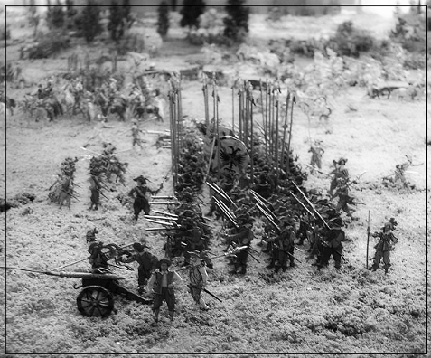

 |
THIRTY YEARS WAR (30YW)ist ein auf Hexfeldern basierendes Spielsystem, um Schlachten & Scharmützel während des Dreissigjährigen Krieges (1618 - 1648) zu simulieren. Das Spielsystem achtet ausdrücklich nicht auf Methoden historisch akkurater Kriegsführung, sondern erlaubt es den Spielern, frei zu entscheiden, wie sie zur damaligen Zeit gekämpft hätten. In diesem Grundregelwerk wird zudem keine Rücksicht genommen auf die länderspezifischen, militärischen Einheitentypen zur damaligen Zeit. Szenarien erweitern das Grundregelwerk bei Bedarf.Eine Spielrunde entspricht zwei Minuten Echtzeit. Ein Hexfeld entspricht in etwa 50m. Spielidee: Gerald Zabos & Jonas Rackl |